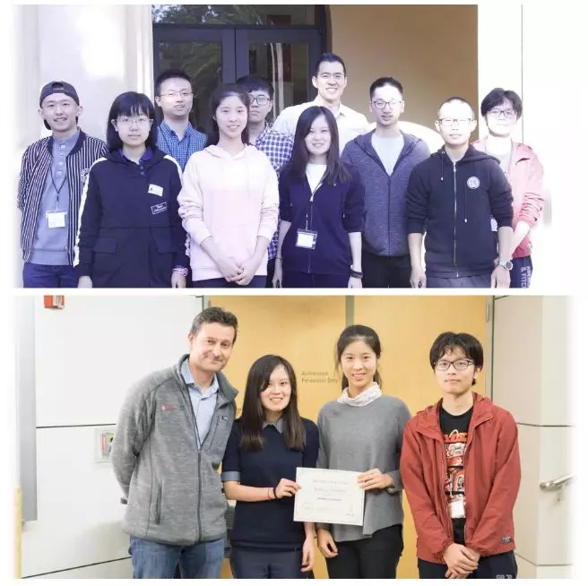
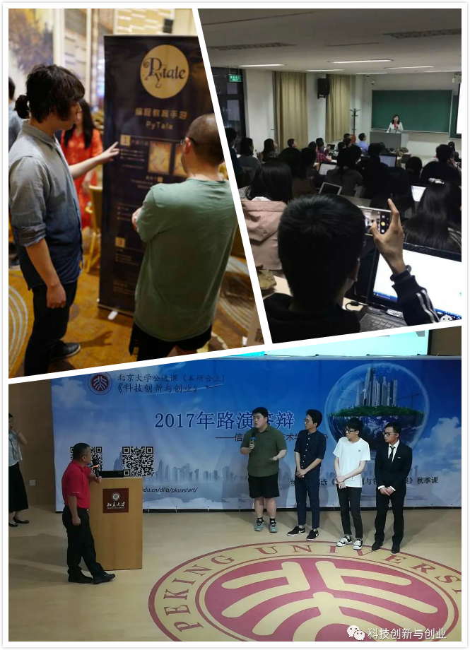
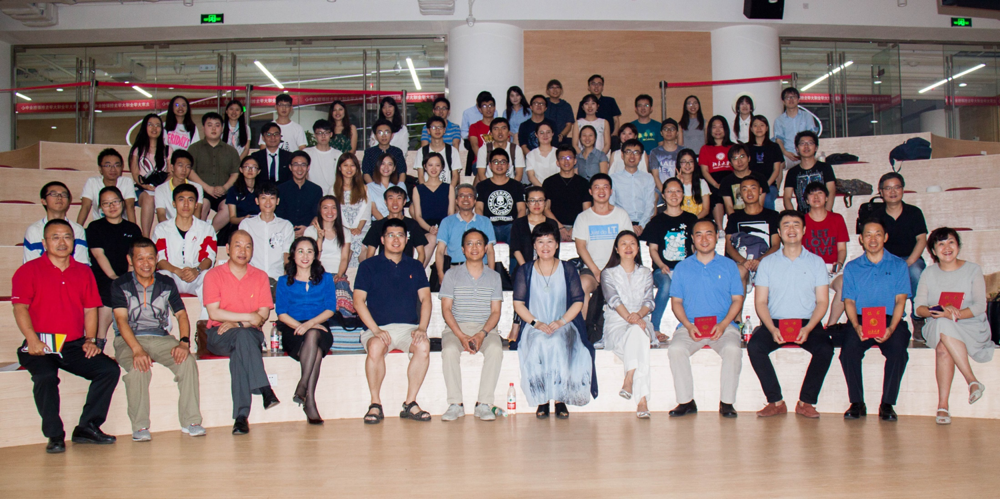

useful links
Dlib组主页姐妹课《职业规划与领导力发展》链接
课程编号
本科生课号：04833010
course time
2023.2.23–6.8每周周四晚上10~11节
(6：40-8：30pm)
classroom
北大三教405
微信号
pkuxstart

contact
助教:
杨泽玉
yzyu@pku.edu.cn
赵禹昇
yusheng.zhao@stu.pku.edu.cn
科技创新与创业
Technology innovation and Entrepreneurship
课程定位
课程旨在培养学生的创新思维，让学生了解产业分析、需求把握、产品设计、商业计划等基本创业流程，掌握团队建设、领导力培养等创业技能。课程以学生听讲座为主，邀请多位创业成功的杰出人士授课，穿插大量的课堂讨论，并辅以物联网、企业大数据、人工智能、高科技产业等实际案例分析。实践环节以团队项目（可以是已有项目）驱动，学生须亲自参与项目调研及开发工作（有分工合作，不一定要编程），体验科技创业的激情与艰辛。本课还根据学生自己提出来的创新项目的特点，安排授课嘉宾或相关行业的领军人物在课下对各创业团队进行互动和指导。通过本课程的学习，有助于提升学生的科学素养，并培养学生的科技敏感和商业嗅觉。
本课程不限制选课专业年级，欢迎全校学生踊跃报名。
2023年春季“科技创新与创业”课程安排如下：
| 时间 | 嘉宾 | 主题 |
|---|---|---|
| 2.23 | 北京大学人工智能创新中心名誉主任、百度创始七剑客、酷我创始人雷鸣 |
科技创新塑造未来[链接] |
| 3.2 | 北京顶象联合创始人史博 |
从好奇心到出圈：自我认知与创业选择 [链接] |
| 3.9 | 北京智源人工智能研究院研究员付杰 |
如何用ChatGPT改变世界 [链接] |
| 3.16 | Nolibox创始人徐作彪 |
关于创业原则的思考[链接] |
| 3.23 | 字节跳动副总裁谢欣 |
毕业17年之际回顾我的大学生活 |
| 3.30 | 董科含 |
创业从0到1：如何把握时代机遇 |
| 4.6 | 于柯寒 | |
| 4.13 | 新智元创始人&CEO杨静 |
从AI到元宇宙的产业链创新 |
| 4.20 | 唱吧CEO陈华 |
元宇宙是泡沫吗?XR的未来是什么 |
| 4.27 | 星融Asterfusion公司副总裁胡波 |
走在通往开放网络的大道上 |
| 5.11 | 麦肯锡健康创始人兼CEO樊琴 |
领导力的构建与应用 |
| 5.18 |
创新项目预答辩 |
|
| 5.25 | Atypical Ventures 基金合伙人刘超 |
风险投资人怎么识人 |
| 6.1 | 晟元全球投资袁骏 |
金融投资与科技应用 |
| 6.8 | 张铭、主讲嘉宾、校内外导师、投资人 |
商业计划书路演答辩 |
考核方式
（1）课堂上表达与分享的参与程度、课程反馈 20%
（2）跟创业导师的面谈、小组活动、小组讨论 20%
（3）小组项目答辩和展示（主要商业计划书） 40%
（4）课程学习心得报告 20%
往期剪影

|
|
ChenceShi (史晨策), ZiqingYang (杨子晴)， Best Use of Intel API（1500$）@2018 Stanford Health++ Hackathon |

|
|
华盛顿全球挑战赛 |
|  |
|
斯坦福2017Health Hackson，CatherineJan、师浩然以及朱芄蓉同学设计的CatSpotter成功进入决赛，并夺得了PHIND Innovation Grand Prize和Intel Nervana AI Cluster Runner-Ups两项大奖 |
|  |
|
同学们积极参与课程和路演答辩 |

|
|
2018学期路演答辩 |
|  |
|
2017学期路演答辩 |

|
|
2016学期路演答辩 |